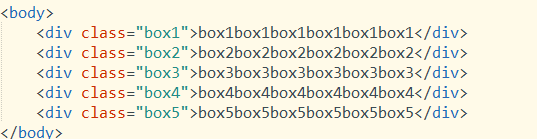
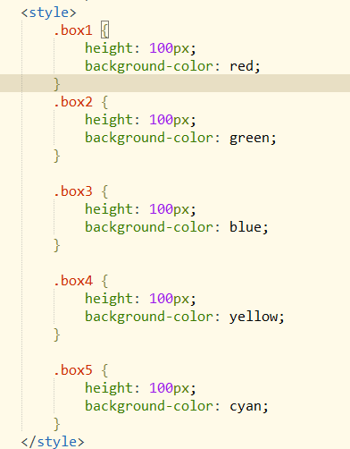
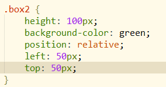
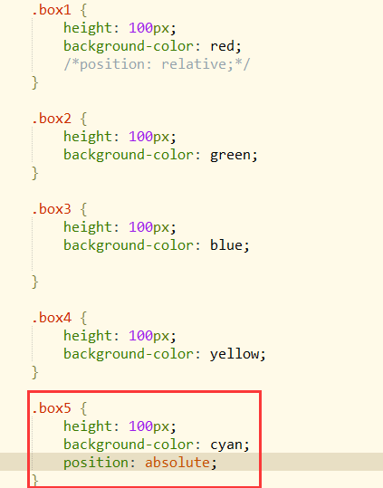
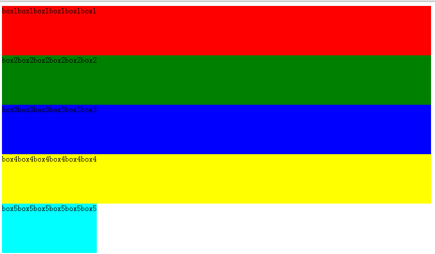
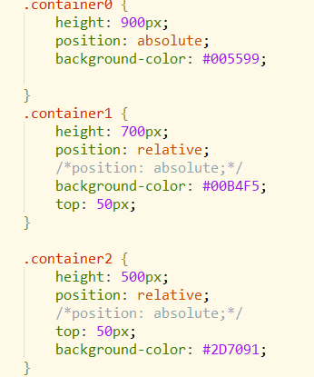
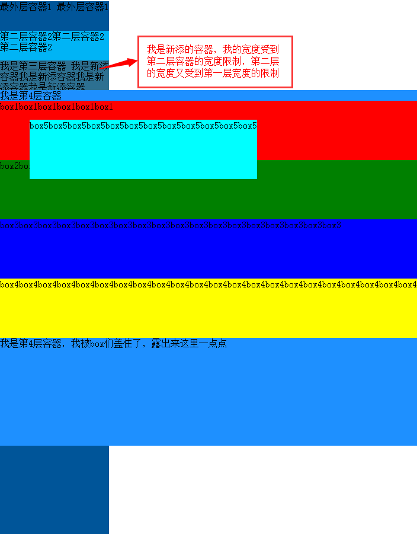
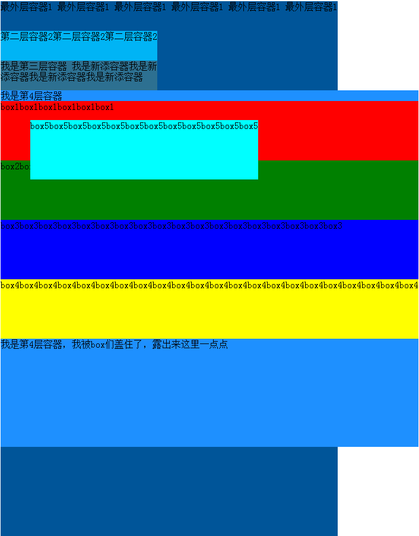
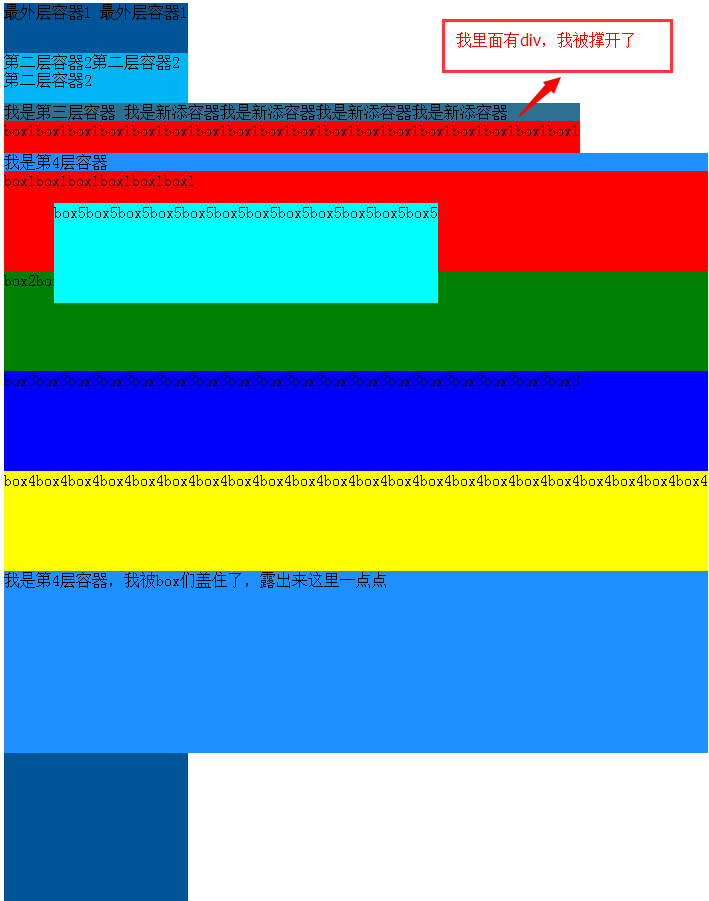
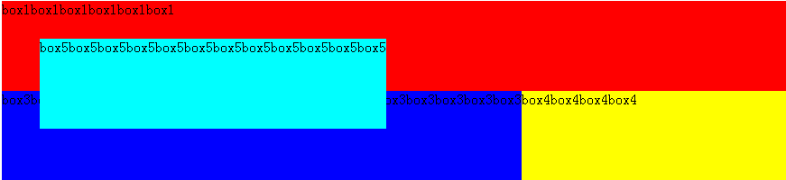

一、position の4つの値：static、relative、absolute、fixed。
絶対配置：absolute と fixed は総称して絶対配置と呼ばれます。
相対配置：relative
デフォルト値：static
二、relative配置とabsolute配置の違い
例：
HTMLコード：

cssコード：

初期状態：

1、relative：元の位置を基準に移動します。このプロパティを設定した要素は依然としてドキュメントフロー内にあり、他の要素のレイアウトには影響しません。
2番目のboxにrelativeを設定する：
要素は元の位置から偏移し、幅と高さは変わらず、コンテナを押し広げました。


2、absolute：要素はドキュメントフローから外れます。オフセット量を設定すると、他の要素の位置指定に影響を与えます。
5番目のboxにだけabsoluteを設定する：
説明：要素が幅を定義していない場合、幅は要素の中のコンテンツによって決まります。効果はfloatメソッドと同じです。


absolute配置の原理の分析：
1. 親要素が相対配置または絶対配置を設定していない場合、要素はルート要素（つまりhtml要素）を基準に配置されます（親要素が設定していない場合です）。
ここでbox5にオフセット値を設定して検証します：


2. 親要素が相対配置または絶対配置を設定している場合、要素は自分から最も近い、相対配置または絶対配置が設定された親要素を基準に配置されます（または、自分から最も近い static ではない親要素を基準に配置されます。要素のデフォルトは static のためです）。
補足：ネット上では要素は最初の static ではない親要素を基準に配置されると説明する人もいますが、これは誤解を招きやすいと思います。以上は私自身の定義です。
次にbody要素に絶対配置を設定します（body要素をabsoluteに設定したため、コンテナ全体の幅は最も長いdivによって決まり、幅が小さくなりました）：
このとき、box5はbody要素を基準に配置されます。

上記のhtml要素を基準にした配置とbodyを基準にした配置の2つの図を並べると、比較して下の図では、bodyを基準にしたbox5は文字のbox1から少し遠いことがわかります。したがって、親要素が相対配置または絶対配置を設定していない場合、absoluteを設定した要素はhtmlルート要素を基準に配置されます。


cssコード：

この記述をさらに検証します：親要素が相対配置または絶対配置を設定している場合、要素は自分から最も近い、相対配置または絶対配置が設定された親要素を基準に配置されます。
次に、boxたちを3つの親コンテナで包みます。次のようになります：
HTMLコード：

3つの親コンテナのCSSスタイルは次のとおりです：

現在の状態では、box5は前述の「最初のstaticではない要素」を基準に配置されるわけではありません（この記述に従えば、今のbox5は最外層のコンテナ1を基準に偏移するはずです）。実際には、自分から最も近い層で相対配置または絶対配置が設定された親要素を基準に配置されます：

次に、2番目のコンテナと3番目のコンテナのpositionをコメントアウトします（positionがないと、top、left、bottom、rightの値を設定しても効果がありません）。結果は次のとおりです：
今、box5の外側で相対または絶対が設定された親要素は最外層のコンテナ1だけなので、box5は最外層のコンテナ1を基準に配置されます。（明らかにbox5は移動しました）

次に、3番目のコンテナのpositionだけをコメントアウトします。
原理は同じで、今度は2番目のコンテナを基準に配置されます（top：50px、自分から最も近い、相対配置または絶対配置が設定された親要素）：

上記では2番目と3番目のコンテナは両方とも相対配置でしたが、今度は絶対配置に変更します：
cssコード：

原理は2番目と3番目のコンテナをrelativeに設定した場合と同じですが、absoluteに設定した後、3番目のコンテナは内容ごとドキュメントフローから外れたため、外側の2つのコンテナの幅を押し広げませんでした。
現在の効果：

外側にもう1つコンテナを追加して、上記の1番目と2番目が押し広げられていない効果を検証します。

幅は1つ上の親コンテナの幅に制限されます。1番目のコンテナの幅を広げると、2番目と3番目もそれに伴って広くなります。効果は次のとおりです：

ただし、コンテナの中に長いdivがある場合、コンテナは依然として押し広げられます。効果は次のとおりです：

補足：
box2をabsolute配置に設定すると、ドキュメントフローから外れ、box3は上に移動し、左側がbox2に覆われました。

上記の状態で、box3にabsoluteを設定すると、box3はドキュメントフローから外れ（box3が浮かび上がってbox2の上に浮いたように）、box4は上に移動し、box3はbox2とbox4の一部を覆います。

同様に、box4に絶対配置を設定すると、浮かび上がってbox3とbox2を覆います。
まとめ
relative：配置は自身の位置を基準にした配置です。（オフセット量を設定するとき、自身が存在する位置を基準に偏移します）。relativeを設定した要素は依然としてドキュメントフロー内にあり、要素の幅と高さは変わらず、オフセット量を設定しても他の要素の位置には影響しません。最外層のコンテナをrelative配置に設定した場合、幅を設定していなければ、幅はブラウザ全体の幅になります。
absolute：配置は、要素から最も近い、絶対配置または相対配置が設定された親要素を基準に決定されます。親要素が絶対配置または相対配置を設定していない場合、要素はルート要素すなわちhtml要素を基準に配置されます。なお、absoluteを設定した要素はドキュメントフローから外れます。要素が幅を設定していない場合、幅は要素の中のコンテンツによって決まります。外れた後、元の位置は空のような状態になり、下の要素がその位置を占めます。
原文リンク：http://www.cnblogs.com/yy95/p/5672440.html